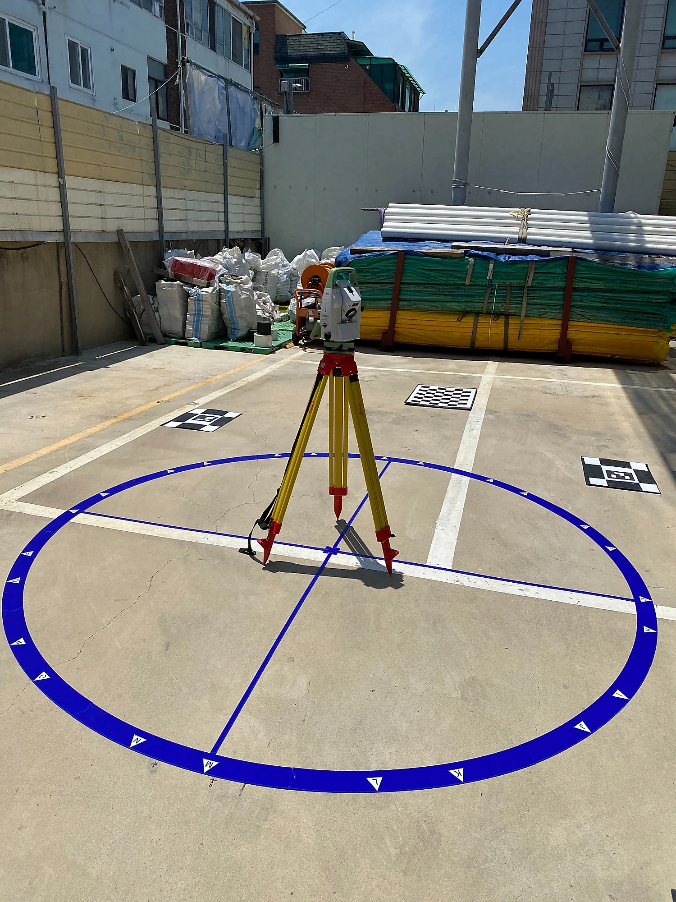
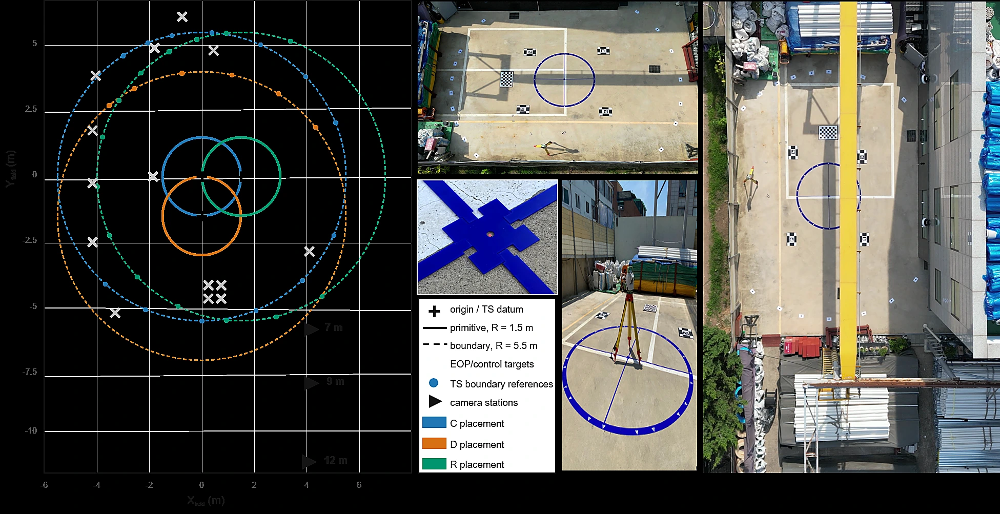

Useful for visualization, insufficient for certification.

CASE 001 / PAPER UNDER REVIEW
From a surveyed primitive
to an auditable boundary.
Can a single oblique image test whether a field-generated design boundary has been preserved?
FIELD RECORDPhysical reference before image interpretation
01
QUESTION
A projected boundary may look correct and still fail as a measurement.
Visual agreement answers a perceptual question. The paper asks a metric one.
The design boundary is first generated in object space from a surveyed primitive. The image is then used only as an observation channel. Its response is returned to object space and compared at the terminal quantity.
This separation prevents the image from defining the reference it is later asked to verify.
≠
Requires an independent datum, declared model and terminal comparison.
02
THEORY
A TRACEABLE FIVE-STAGE CHAIN
Each stage has one job. No stage is allowed to validate itself.
Use the numbered controls to inspect how the physical datum, image observation and terminal audit remain separate.
01 / SURVEY
Establish the primitive in object space.
TS observations estimate a common centre and primitive radius. The camera has not yet contributed to either quantity.
CAN ESTABLISHPhysical origin and metric scale
CANNOT ESTABLISHImage response or terminal conformity
02 / GENERATE
Create the design boundary by declared scaling.
The boundary radius follows from the surveyed primitive and an explicit scale factor. It is not selected by looking at the image.
CAN ESTABLISHDesign radius in the same metric frame
CANNOT ESTABLISHWhere an observed image response will fall
03 / PROJECT
Predict an image address from known geometry.
The camera model maps a known object-space point to an expected image location. That prediction guides observation; it is not the final measurement.
CAN ESTABLISHPredicted image location under the declared model
CANNOT ESTABLISHThe actual response selected in the image
04 / RETURN
Back-project the selected response into object space.
The observed pixel defines a ray from the camera centre. Its intersection with a declared support surface gives the reconstructed object-space location.
CAN ESTABLISHA 3D point under the declared support model
CANNOT ESTABLISHConformity before terminal comparison
05 / AUDIT
Compare the two radii and retain direction.
The final discrepancy is computed only after the generated boundary and reconstructed reference radius exist in the same object-space frame.
CAN ESTABLISHSigned terminal radial discrepancy
CANNOT ESTABLISHMore certainty than the preceding chain supports
Fit the physical centre and primitive radius.
The measured primitive points define the datum before the camera enters the chain.
- Pi
- the ith surveyed primitive point
- O
- candidate primitive centre
- r
- candidate primitive radius
- ˆ
- estimated quantity obtained from the fit
- arg min
- values of centre and radius that minimise the summed squared radial residuals
Generate the design boundary by declared metric scaling.
The design boundary is derived from the surveyed primitive, not selected in the image.
- RB
- generated design-boundary radius
- λ
- declared scale factor from primitive to boundary
- r̂P
- estimated physical primitive radius
Carry a known object-space point into the image.
The projection predicts where known geometry should appear. The scalar q is used here to avoid confusing projective scale with the session index used later.
- X̃
- object-space point in homogeneous coordinates
- ũ
- predicted image point in homogeneous pixel coordinates
- K
- camera intrinsic matrix
- R, t
- camera rotation and translation
- q
- non-zero projective scale
Return the selected image response to object space.
The pixel becomes a ray. A support surface or point height is still required to select one 3D location on that ray.
- C
- camera projection centre in object space
- μ
- distance parameter along the ray
- RT
- transpose of the rotation matrix, mapping the ray back to object space
- K−1
- inverse intrinsic mapping from pixels to a camera-frame direction
- ũ
- the selected observed image response, not merely the predicted address
Compare the generated and reconstructed radii.
This displayed definition retains direction rather than reporting only an absolute magnitude.
- ΔRsj
- signed radial discrepancy for session or condition s and boundary observation j
- R̂b,s
- estimated generated-boundary radius for session s
- R̂ref,sj
- radius recovered from the selected image response and its object-space support for observation j
- b
- generated boundary
- ref
- reconstructed reference response
Algebraic sign of the displayed definition
ΔRsj > 0R̂b,s > R̂ref,sj
The reconstructed reference lies at a smaller radius than the generated boundary—radially inward, provided both use the same origin.
ΔRsj = 0R̂b,s = R̂ref,sj
The two radii coincide.
ΔRsj < 0R̂b,s < R̂ref,sj
The reconstructed reference lies at a larger radius than the generated boundary—radially outward.
This interpretation follows the equation shown above. If the final manuscript reverses the subtraction order, the sign labels must also reverse; the website must match the accepted manuscript exactly.
03
FIELD REALIZATION
The geometry existed before it became a figure.
The installation combines a surveyed datum, a physical primitive, an exact generated boundary, camera stations and independent TS references.

The diagram and photographs show the physical arrangement from both metric and visual viewpoints. The complete observation accounting remains in the manuscript and supporting package.
Physical datum
The origin and primitive are surveyed independently of the image.
Multiple placements
Central, lateral and depth-displaced arrangements test different viewing geometry.
Multiple distances
Increasing range changes projected observability and inverse sensitivity.
Independent references
Selected TS boundary points challenge the generated geometry in object space.
04
INTERACTIVE LAB
LOCAL SENSITIVITY—NOT GLOBAL ACCURACY
Find the largest image displacement that keeps the selected local ground effect below 5 cm.
Adjust the pixel displacement. The calculation and diagram use the same explicit relation, so the status cannot disagree with the displayed value.
g = p × m ÷ 10
- p
- image displacement in pixels
- m
- selected local inverse-Jacobian scale in mm/px
- g
- estimated local ground effect in centimetres
- 0
- 1
- 2
- 3
- 4 px
The marker shows the selected displacement from the predicted image address.
at 7 m
- 0
- 5
- 10
- 15
- 20
- 25 cm
The gold line is the 5 cm challenge threshold; the marker is the computed effect.
LOCAL SCALE27.815 mm/px
5 CM PIXEL LIMIT1.797 px
COMPUTED EFFECT4.17 cm
STATUSWITHIN 5 CM
1.50 px × 27.815 mm/px = 41.72 mm.
Scope. The three scales—27.815, 41.079 and 61.782 mm/px—are selected local inverse-Jacobian values for educational comparison. They are not a global accuracy specification for the complete measurement chain.
05
SELECTED EVIDENCE
OBJECT-SPACE VALIDATION
Three placements. Two views. One metric frame.
The explorer below shows selected TS boundary checks only. It does not substitute for the full terminal image audit.

3.8 mm17 points
7.5 mm16 points
14.0 mm8 points
06
INTERPRETATION
What the selected object-space checks do—and do not—establish.
The generated boundary is physically testable.
The selected TS references lie around the nominal boundary with millimetre-scale radial residuals in these examples.
Placement changes support and fit.
C3 is the densest and smallest-RMSE example; D3 contains fewer selected points and the largest RMSE.
Object-space validation is not the image audit.
The images above verify the generated boundary, not the complete image response, back-projection and signed terminal discrepancy.
CLAIM BOUNDARY
A credible result includes the limits of what it can say.
- The physical datum and surveyed primitive precede the image.
- Exact metric scaling generates the design boundary.
- Selected TS points independently check the object-space boundary.
- Projection and back-projection are explicitly connected.
- The terminal difference preserves sign.
- Identical performance for arbitrary cameras or sites.
- A complete GUM uncertainty statement.
- The full 27-condition image-audit result.
- Public release of raw coordinates, calibration files or reviewer correspondence.
- That an unverified case is equivalent to zero error.
Do not claim what the measurement chain cannot support.
RELEASE LEDGER
Public explanation now.
Complete evidence with the paper.
The current site exposes the research question, selected theory, field realization and limited object-space checks. The full method, terminal results and reproducibility package remain tied to the manuscript’s release status.
Research questionRELEASED
Core theoretical chainRELEASED
Selected object-space evidenceRELEASED
Full terminal image auditWITHHELD
Raw data and implementationWITHHELD
PaperUNDER REVIEW